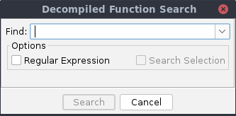
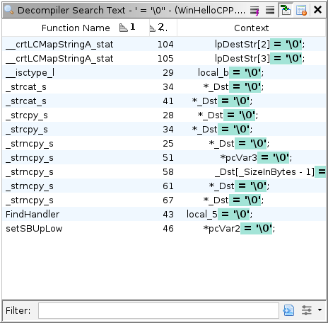

Available from Search  Search
Decompiled Text, this action allows you to search the decompiled output
for each function in the current program.
Search
Decompiled Text, this action allows you to search the decompiled output
for each function in the current program.
Available from Search
Search Decompiled Text, this action allows you to search the decompiled output for each function in the current program.
The Decompiled Function Search dialog is shown when users execute the Search Decompiled Text action. If String Search is selected, then a case insensitive text search is performed using the specified text. If Regular Expression is selected, then a Regular Expression search is performed. Selecting Search Selection will only search function entry points that are in the current program selection.
 The Decompiled Function Search input dialog
When restricting the search to the current program selection, only functions whose entry point is in the selection will be searched. The selection will not search functions that have a program selection in the body, but not at the entry point.
The search results will be presented as they are found, as seen in the table below. For single line search matches, the matching part of the search will be highlighted in the Context column.
 The Decompiled Function Search results table Select Functions Action

This action will create a program selection for each function entry point for each function selected in the table.
Other Actions
Help for the other table actions can be found here.
The table below show some example searches and lines that they will match. Note that the reported matches will show the entire line that matched, not just the matching portion of the line.
Search String Description Example Matching Lines = '\0'A non-regular expression to find the null character assignment. ptr->data[1] = '\0';set_string\(.*->.*\)A regular expression to find set_string(followed by any number of characters, followed by->, followed by any number of characters and a closing parenthesis.set_string(mytable->entry + mytable->numcodes,ptr);(?s)ffff.*piVar2 =A regular expression that searches across multiple lines by using (?S). This will findfffffollowed by any number of characters, followed bypiVar2 =.if (__CTOR_LIST__ != (code *)0xffffffff) {
piVar2 = (int *)&__CTOR_LIST__;,
Provided by: Decompiler Text Finder Plugin